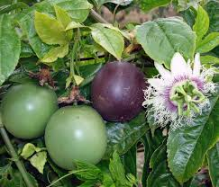

Info Tanaman Banyumanik

Markisa
Kingdom: Plantae
Divisi: Tracheophyta
Class: Magnoliopsida
Ordo: Malpighiales
Famili: Passifloraceae
Genus: Passiflora
Spesies: Passiflora edulis
🌱 Budidaya
- Lingkungan: Cocok ditanam di dataran tinggi (1.000–1.500 mdpl), tapi beberapa varietas dapat tumbuh di dataran rendah. Membutuhkan sinar matahari penuh dan tanah gembur & subur dengan pH 5,5–6,5. Perlu rangka rambatan atau para-para.
- Penanaman: Dapat dilakukan melalui biji, cangkok, atau stek batang. Biji perlu disemai terlebih dahulu, kemudian dipindahkan ke lahan setelah memiliki 4–6 helai daun.
- Perawatan: Siram secara rutin, terutama saat musim kering. Berikan pupuk dasar dari kompos + NPK, lalu pupuk lanjutan setiap bulan. Pangkas tunas liar untuk mendorong pertumbuhan buah yang optimal.
💡 Fun Fact
"Bunganya Cantik dan Unik" — Bunga markisa dikenal sangat indah dan eksotis, hingga dijuluki passion flower karena bentuknya menyerupai salib.
🍃 Manfaat
- Kaya akan vitamin C, serat, dan antioksidan yang membantu menjaga imunitas serta melancarkan sistem pencernaan.
- Dapat diolah menjadi berbagai hidangan menyegarkan seperti sirup, jus, dan campuran es buah.
- Berpotensi tinggi sebagai produk olahan bernilai ekonomi, cocok untuk pengembangan industri rumahan.